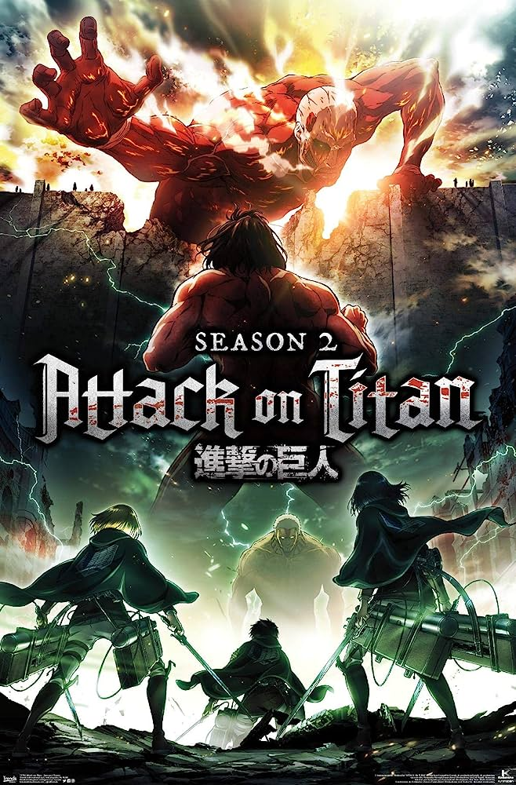

The Best Movies According to KatarinaMy Top 3 Movies of all time |

When man-eating Titans first appeared 100 years ago, humans found safety behind massive walls that stopped the giants in their tracks.
The story follows Light Yagami, a genius high school student who discovers a mysterious notebook: the "Death Note", which belonged to the shinigami Ryuk.

a ten-year-old girl who, while moving to a new neighborhood, enters the world of Kami (spirits of Japanese Shinto folklore). After her parents are turned into pigs by the witch Yubaba (Natsuki), Chihiro takes a job working in Yubaba's bathhouse to find a way to free herself and her parents and return to the human world.